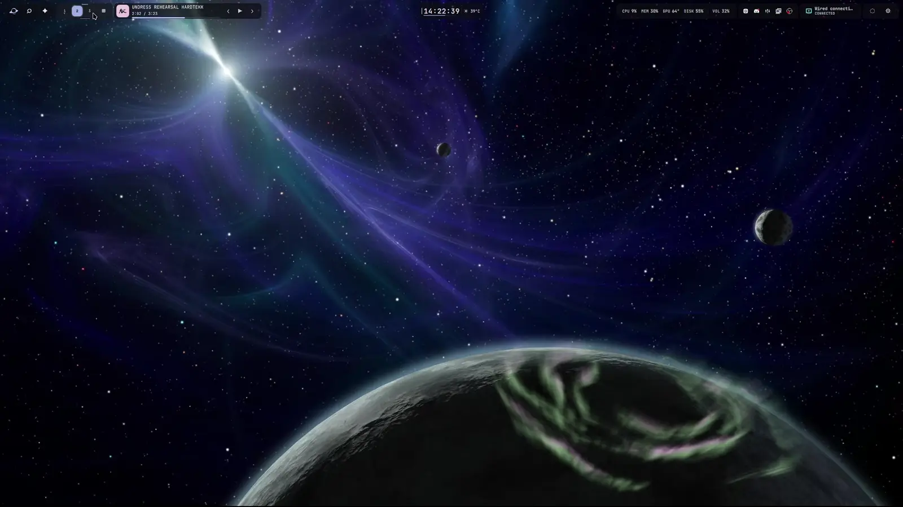

A desktop with
a little
gravitational pull.
Orbiting wallpapers. Fluid surfaces. Music you can bend.
A desktop that feels a little more like you.
Built with Quickshell.
Made for your own orbit.
Yes, this is
someone’s desktop.
These are real captures of Tonantzintla.
No browser mockup. Just the shell, doing its thing.

Five instruments.
One strange, lovely desktop.
From the things you reach for every minute to the view behind it all. Every instrument has a job.
Everything within reach.
Nothing in your way.
Workspaces, media, time, and system readings, kept together in a bar you can arrange around the way you work.
- Move and reorder your islands
- Choose horizontal or vertical layouts
- Open a tool on the display you’re using
A little more room
for the important stuff.
Search, calendar, settings, network, clipboard, and the tools that deserve more than a tiny dropdown. Open what you need, then get back to it.
- Find apps and shell actions by name
- Keep everyday tools in one place
- Set your appearance, controls, and motion
 02 / TOOLS ON DEMAND
02 / TOOLS ON DEMANDA different view.
Your same universe.
Your wallpaper library, with a little gravitational pull of its own. Browse an open orbit, preview the view, and apply it when it feels right.
- Browse local and bundled wallpapers
- Preview before applying
- Choose the output you want to change
 03 / THE WALLPAPER ORBIT
03 / THE WALLPAPER ORBITGood music.
A little room to bend it.
Playback, lyrics, spectrum, and pitch controls live beside the music. Switch between the players your session exposes and shape what you hear.
- Play, pause, skip, and seek
- Read lyrics when available
- Explore audio routing and effects
 04 / THE AUDIO CONSOLE
04 / THE AUDIO CONSOLEYour own eclipse.
A proper session lock.
A dedicated Wayland session-lock process with PAM authentication and an independently customizable interface. Start with the visual preview, then validate locking on your system.
- Separate lock and preview processes
- Customize motion and atmosphere
- Read the first-lock guidance before use
 05 / VISUAL PREVIEW
05 / VISUAL PREVIEW
Eccentricity belongs
on the desktop.
An observatory you operate. Strange shapes, ordinary tasks, and a point of view that doesn’t disappear the moment you get to work.
It has a job.
Controls you can find. Tools that say what they do. Space for the things you use every day.
Keep the character.
Open orbits, flowing surfaces, and imperfect silhouettes. Useful doesn’t have to mean boring as hell.
Make it yours.
Your apps, fonts, wallpaper, bar layout, and motion. Your desktop should fit how you actually use it.
Find your
own orbit.
Tonantzintla 1.1 is built with Quickshell for Niri. Start with the supported setup: Arch Linux, similar derivatives, or Obarun.
Read the installation guideArtix is intentionally unsupported.
sudo pacman -S --needed git rust git clone https://github.com/deltadasher/Tonantzintla.git cd Tonantzintla ./bin/blackhole install --profile recommended --niri keep --umbra lock ~/.local/bin/blackhole start
Keeps your existing Niri configuration. On Obarun, enable obcommunity first. Read the guide before running.
Is this a whole Linux distribution?
It’s a desktop shell built with Quickshell for your Wayland session. It brings together a bar, desktop tools, wallpaper and music interfaces, and the Umbra lock screen. Your applications and operating system stay yours.
Which systems does it support?
Niri is the supported compositor. The project is tested on Arch Linux, similar derivatives, and Obarun. Artix is intentionally unsupported. Optional features need their own backends; check the dependency guide for your setup.
Will it replace my Niri configuration?
The commands above use --niri keep to preserve your existing Niri configuration. Choose --niri replace only if you want the bundled configuration. Read the installer’s choices before confirming them.
How do I try the lock screen safely?
Start with blackhole preview-lock. This previews Umbra without locking the compositor or invoking PAM; Escape closes it. A visual preview doesn’t test authentication. Read the Umbra first-lock and recovery guidance before your first real lock.
Where do I start if something isn’t working?
Run blackhole doctor to inspect your setup without changing it, or blackhole daemon logs for recent shell logs. Check the dependencies and existing issues before opening a report.